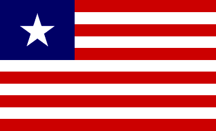

<!-- START: header / navigation bar -->
<nav id="myNavbar" class="row navbar navbar-default navbar-fixed-top navbar-inverse" role="navigation">
        <div class="navbar-header">
            <a class="navbar-brand pull-left" href="page_home.php" style='width:85px'></a>
            <button type="button" class="navbar-toggle pull-right" data-toggle="collapse" data-target="#navbarCollapse">
                <span class="sr-only">Toggle navigation</span>
                <span class="icon-bar"></span>
                <span class="icon-bar"></span>
                <span class="icon-bar"></span>
            </button>
        </div>

        <div class="navbar-collapse collapse" id="navbarCollapse">
            <ul class="nav navbar-nav">
                <li id="page_home"><a href="https://sites.google.com/site/liberiacbis/">Return to CBIS Site&nbsp;</a></li>
                <!--<li id="page_dataPortal"><a href="page_dataPortal.php">Data Portal</a></li>-->
                <!--<li id="page_deqa"><a href="page_deqa.html">Data Entry / QA</a></li>-->
            </ul>
<!--            <ul class="nav navbar-nav pull-right" style="padding-right:20px">
                <li><a href="#" data-toggle="modal" data-target="#modal_changePW">Change PW</a></li>
                <li><a href="/LastMileData/php/scripts/logout.php">Logout</a></li>
            </ul>-->
        </div>
</nav>
<!-- END: header / navigation bar -->